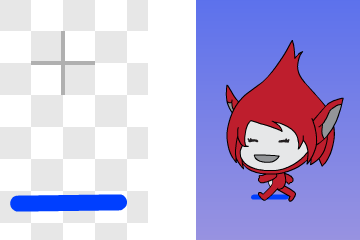
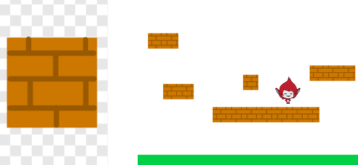
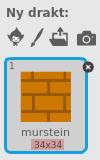

Før Super Mario fikk sine egne spill het han Jumpman. I dette
prosjektet skal vi lage et Super Mario-lignende plattformspill. Det er
ganske involvert, og vi vil derfor dele opp prosjektet i fire deler
som til sammen blir et spennende spill.
I denne andre delen skal vi fokusere på hvordan vi kan gjøre avansert
kollisjonsdeteksjon, og blant annet merke forskjellen på om Jumpman
står på en plattform eller hopper opp i en plattform nedenfra.
Oversikt over prosjektet
Dette prosjektet består av 4 deler hvor vi stadig videreutvikler
spillet vårt.
I del 1 programmerte vi helten vår,
Jumpman, og spesielt animerte vi ham alt etter som om han stod i ro,
løp eller hoppet.
I denne delen vil vi se hvordan vi kan oppdage at Jumpman berører
forskjellige ting, og spesielt hvordan vi kan se forskjellen på om
han hopper opp i en plattform eller står på toppen av den.
I del 3 skal vi utvide verdenen vår ved
å flytte på bakgrunnen. Vi vil da kunne løpe rundt og oppdage
plattformer utenfor skjermen.
I fjerde og siste del vil vi lære hvordan
vi lager flere nivåer, samt hvordan vi kan inkludere elementer som
smarte fiender og bevegelige plattformer.
Steg 1: Sensorer
Vi skal nå se hvordan vi kan få mer kontroll på hvordan Jumpman
berører verden rundt seg. Til dette skal vi lage noen spesielle
figurer som vi kaller sensorer.
Tegn en ny figur som du kaller Sensor - Fot. La denne bestå av en
kort vannrett strek, omtrent på størrelse med føttene til
Jumpman-animasjonene.

Vi skal nå skrive kode som limer denne sensoren til føttene til
Jumpman, på samme måte som vi lot Animasjon-figurene følge
Kontroller-figuren. Lag først en ny variabel, (sensor - fot), som gjelder for alle figurer. Skriv deretter:
når jeg mottar [oppdater sensor v]
sett [sensor - fot v] til [nei]
pek i retning ([retning v] av [Kontroller v])
sett x til ([x-posisjon v] av [Kontroller v])
sett y til ([y-posisjon v] av [Kontroller v])
Du la kanskje merke til at meldingen oppdater sensor var ny? Legg
til både send melding [oppdater sensor v] og send melding [sjekk sensor v] øverst i for alltid-løkken på
scenen.
Test spillet ditt. Du skal nå ha en Sensor - Fot-figur som følger
Jumpman rundt på skjermen. Om figuren ikke ligger ved føttene til
Jumpman kan du flytte den ved hjelp av
-knappen under
Drakter-fanen.
Nå skal vi bruke sensoren. Legg til dette skriptet på Sensor - Fot-figuren:
når jeg mottar [sjekk sensor v]
hvis <berører fargen [#009900]?>
sett [sensor - fot v] til [ja]
slutt
Bytt deretter alle<berører fargen [#009900]?>-klosser på
Kontroller-figuren med <(sensor - fot) = (ja)>-klosser.
Test spillet ditt igjen. Det skal fungere akkurat slik det gjorde
før vi la til sensoren (i neste steg vil du se hvorfor det likevel
er nyttig med denne sensor-figuren). Om du er fornøyd kan du skjule
sensoren ved å gjøre den gjennomsiktig:
når grønt flagg klikkes
sett [gjennomsiktig v] effekt til (100)
begrens rotasjon [ikke roter v]
Steg 2: Mursteiner
Vi skal nå lage mursteiner som vi både kan bruke som plattformer, og
vi kan hoppe i dem nedenfra og få ting til å skje.
Lag en ny sensor-figur, Sensor - Hode, som du gir det samme
oppdater sensor-skriptet som Sensor - Fot (men med den nye
variabelen (sensor - hode) som gjelder for alle
figurer). Plasser denne figuren ved toppen av hodet til Jumpman.
Den nye hode-sensoren kan vi bruke til å stoppe Jumpman når han
hopper opp i en plattform. Legg til denne testen på sjekk plattform-skriptet til Kontroller-figuren:
hvis <<(sensor - hode) = [ja]> og <(fartY) > [0]>>
sett [fartY v] til [0]
slutt
Tegn en ny figur som du kaller Murstein. Denne kan gjerne være
ganske liten. Vi skal snart klone den for å bruke mange mursteiner
til å lage plattformer med.

Først skal vi se hvor lett det nå er for Jumpman å sense mursteinen.
Lag et skript som sjekker sensorene:
når jeg mottar [sjekk sensor v]
hvis <berører [Sensor - Fot v]?>
sett [sensor - fot v] til [ja]
slutt
hvis <berører [Sensor - Hode v]?>
sett [sensor - hode v] til [ja]
slutt
Plasser Murstein-figuren et passende sted og test spillet ditt.
Stopper Jumpman når han hopper opp i mursteinen?
Vi skal nå bruke kloning for å plassere ut flere mursteiner. Lag et
skript på Murstein som starter med når jeg mottar [startposisjon v]. Skriv så kode som plasserer ut kloner av
Murstein på spillbrettet. Til dette bruker du stort sett gå til x: () y: ()- og lag klon av [meg v]-klosser.
Om du vil lage en sammenhengende plattform av mursteiner kan du også
bruke en gjenta-løkke. For eksempel,
gå til x: (-80) y: (-70)
gjenta (5) ganger
lag klon av [meg v]
endre x med (34)
slutt
Tallet i endre x med ()-klossen vil avhenge av hvor bred
Murstein-figuren din er. Du kan prøve deg frem, eller sjekke
bredden under Drakter-fanen:

Steg 3: Fruktsalat og andre superkrefter!
I Super Mario kan man hoppe opp i spesielle mursteiner for å finne
penger, sopper og andre spennende ting. Vi skal nå se hvordan Jumpman
kan gjøre det samme.
Sjekkliste
Vi vil nå se hvordan vi kan gjemme en fruktsalat inne i en
murstein. Om Jumpman finner denne og spiser den vil han kunne hoppe
ekstra høyt. Om du senere vil gjemme andre ting med andre effekter kan
du gjøre det på omtrent samme måte.
For å endre på hvor høyt Jumpman hopper trenger vi en variabel. Gå
til Kontroller-figuren, og lag en variabel (hopp) som
gjelder kun for denne figuren. Legg til en sett [hopp v] til [5]-kloss på startposisjon-skriptet, og bruk denne variabelen
til å sette (fartY) når pil opp trykkes.
Klikk så på Murstein-figuren og lag en ny variabel (spesial)
som også gjelder kun for denne figuren. Vi vil bruke denne til å
indikere hva vi har gjemt inne i mursteinen.
Legg en sett [spesial v] til [nei]-kloss øverst i
startposisjon-skriptet. Velg nå en mursteinklone og sett [spesial v] til [fruktsalat] før den lages. Husk å sette
(spesial) tilbake til nei for resten av mursteinene.
Vi skal nå gjøre en endring i sjekk sensor-skriptet til
Murstein. Lag to variabler, (mursteinX) og
(mursteinY), som må gjelde for alle figurer, og legg
deretter den følgende testen inne i hvis <berører [Sensor - Hode v]?>-testen:
hvis <ikke <(spesial) = [nei]>>
sett [mursteinX v] til (x-posisjon)
sett [mursteinY v] til (y-posisjon)
send melding (sett sammen [murstein-] (spesial))
sett [spesial v] til [nei]
slutt
Legg merke til hvordan vi bruker variabelen (spesial) til å
bestemme hvilken melding som sendes ut. Om for eksempel
(spesial) er lik fruktsalat vil vi her sende meldingen
murstein-fruktsalat.
Lag nå en ny Fruktsalat-figur. Du kan tegne den selv eller bruke
Ting/Fruit Salad-figuren i Scratch-biblioteket. La figuren
skjule seg på startposisjon-meldingen.
Når vi mottar murstein-fruktsalat vil vi lage en klon av
Fruktsalat-figuren og vise den. For å vite hvor den skal vises
bruker vi (mursteinX)- og (mursteinY)-variablene.
når jeg mottar [murstein-fruktsalat v]
sett x til (mursteinX)
sett y til ((mursteinY) + (30))
lag klon av [meg v]
Her har vi satt y litt høyere enn (mursteinY) for at
Fruktsalat skal dukke opp over Murstein.
Lag så et skript på Fruktsalat som sier i fra om at Jumpman spiser
den. Skriptet kan begynne med når jeg starter som klon. Videre
kan du vise klonen, vente til klonen
berører Kontroller, sende melding spis fruktsalat og til slutt slette denne klonen.
Nå mangler vi bare at Jumpman hopper høyere etter at han har spist
fruktsalaten. Dette er lett. Kontroller må svare på meldingen
spis fruktsalat med å sette (hopp) til et passende
tall. Prøv for eksempel 8.
Test spillet ditt. Fungerer fruktsalaten? Dukker den opp når Jumpman
skaller i den riktige mursteinen? Kan Jumpman hoppe høyere etter at
han har spist Fruktsalat?
Endre på spillbrettet ditt ved å flytte på eller lage nye
mursteiner. Du kan nå ha mursteiner Jumpman ikke klarer å nå før han
har spist fruktsalaten.
Steg 4: Videreutvikling av spillet
Nå begynner spillet vårt å ta form, selv om vi vil fortsette
utviklingen i del 3. Nedenfor er forslag
til hvordan du kan jobbe videre med spillet før neste del.
Ideer til videreutvikling
Legg til andre spesialmursteiner. For eksempel kan du gjemme nøkler
i mursteinene som du må finne for å låse opp dører, eller kanskje
noe som gjør at Jumpman løper fortere.
Legg til Sensor - Venstre- og Sensor - Høyre-figurer. Disse
lager du på samme måte som Sensor - Fot- og Sensor - Hode-figurene. Bruk disse for å hindre Kontroller-figuren i å gå
gjennom vegger ved å bytte for eksempel <tast [pil høyre v] trykket?> med <<tast [pil høyre v] trykket?> og <(sensor - høyre) = [nei]>>.
Det kan være nyttig med en Sensor - Kne-figur. Denne kan du bruke
for å oppdage om Jumpman står inne i en plattform i stedet for oppå
den. Lag figuren på vanlig måte. Legg deretter til denne testen inne
i hvis <(sensor - fot) = [ja]> :: reporter-testen i sjekk plattform-skriptet på Kontroller:
hvis <(sensor - kne) = [ja]>
endre y med (2)
slutt
Nå er en av utfordringene i spillet å faktisk finne mursteinen hvor
fruktsalaten er gjemt. Det trenger ikke være det. Du kan for
eksempel tegne en egen drakt for spesielle mursteiner. Deretter kan
du lage et vis animasjon-skript på Murstein som bytter drakt avhengig av (spesial)-variabelen.
En viktig del av Super Mario-spillet er å samle penger som ofte er
gjemt i mursteiner. Kanskje du kan lage noe tilsvarende? Du kan
bruke samme (spesial)-variabel som vi har brukt til
Fruktsalat, eller om du vil ha muligheten til å gjemme flere
penger i en murstein kan det være enklere med en ny variabel som
teller hvor mange penger som er igjen. Lag også en ny
(Poeng)-variabel som blant annet teller hvor mange penger du
har funnet.
Kan du få fruktsalaten til å flytte på seg etter at den er funnet?
Den trenger i såfall sine egne (fartX)- og
(fartY)-variabler. Du kan da lage sjekk plattform- og flytt figurer-skript på Fruktsalat som styrer figuren.
Tegn andre figurer enn mursteiner som fungerer som plattformer. Det
viktigste er å implementere sjekk sensor-skriptene. Spesielt kan
du fjerne alle plattformer fra bakgrunnen og heller bruke Murstein
og andre figurer (vi skal uansett gjøre dette i
neste del).
Forbedre denne siden
Funnet en feil? Kunne noe vært bedre? Hvis ja, vennligst gi oss tilbakemelding ved å lage en sak på Github eller fiks feilen selv om du kan. Vi er takknemlige for enhver tilbakemelding!